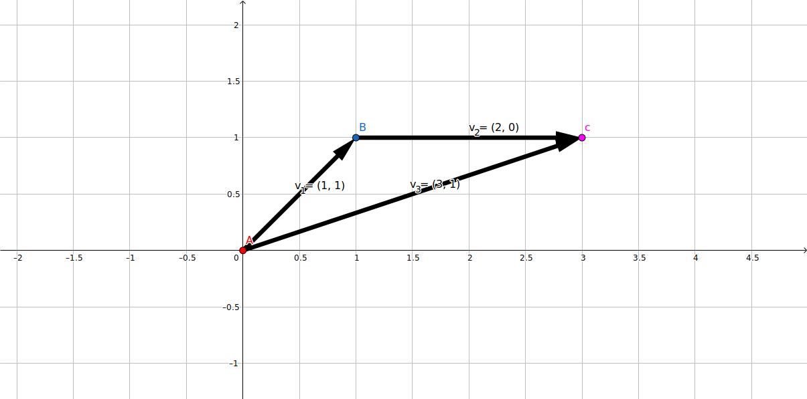
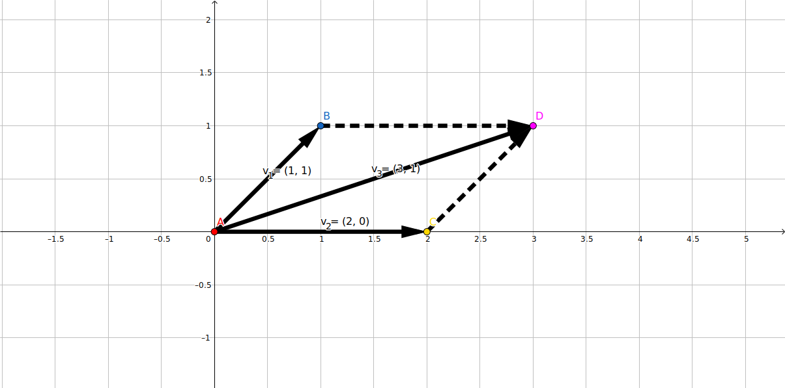
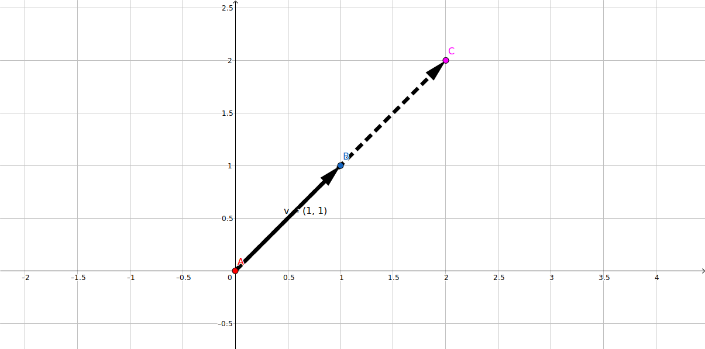

前言
本文讲解向量的加减与数乘，并通过编程实现它们。
向量加减
向量加法：两个向量首尾相接，由起点指向终点的新向量（三角形法则）。或将两个向量平移至共起点，作平行四边形，取对角线（平行四边形法则）。
向量减法：向量减法可以看作是则可以看成是一个向量加上一个大小相等，方向相反的向量（反向量），按向量加法进行运算。
向量加减满足交换律与结合律。

向量运算三角形法则

向量运算平行四边形法则
使用向量矩阵进行加减运算非常简便，各维度数值直接相加减即可。
$$
\overrightarrow{AB} + \overrightarrow{BC} = \overrightarrow{AC}
$$
$$
v_{1}
\begin{bmatrix}
a_{1} \\
a_{2} \\
... \\
a_{n}
\end{bmatrix}
\pm
v_{2}
\begin{bmatrix}
b_{1} \\
b_{2} \\
... \\
b_{n}
\end{bmatrix}
=
v_{3}
\begin{bmatrix}
a_{1} \pm b_{1} \\
a_{2} \pm b_{2} \\
... \\
a_{n} \pm b_{n} \\
\end{bmatrix}
$$
向量数乘
一个标量与一个向量之间可以做乘法，相乘得到一个方向与原向量相同或相反，大小为原向量大小倍数的新向量。-1与任意向量相乘会得到原向量的反向量，0与任意向量相乘会得到零向量。
直观的理解，向量数乘就是对向量做“伸缩”。
使用向量矩阵进行向量数乘运算也非常简便，各维度数值直接与标量相乘即可。

向量数乘（数乘2）
向量线性运算的编程实现
在理解了向量加减与数乘线性运算后，我们来考虑编程实现它们。
在上一节构建的向量类上，我们再添加上数乘方法与加减运算方法。
向量数乘与加减的实现代码大同小异，取出向量各个维度的数值，分别相加、相减、数乘即可。
...
# 向量加法(循环方法)
def __add__(self, v):
new_coordinates = []
n = len(self.coordinates)
for i in range(n):
new_coordinates.append(self.coordinates[i] + v.coordinates[i])
return Vector(new_coordinates)
# 向量加法(列表生成式)
def __sub__(self, v):
new_coordinates = [x - y for (x,y) in
zip(self.coordinates, v.coordinates)]
return Vector(new_coordinates)
# 向量数乘(不重载运算符)
def scalar_mul(self, c):
new_coordinates = [c * x for x in self.coordinates]
return Vector(new_coordinates)
...
向量的线性运算（Python实现）
def vector_add_sub_scalarmul_test():
v = Vector([1, 2])
w = Vector([2, 5])
print(v + w, v - w)
print(v.scalar_mul(3))
print(w.scalar_mul(-1/2))
向量线性运算测试代码
参考资料
- 同济高等数学（第7版）下册, P2 - P6